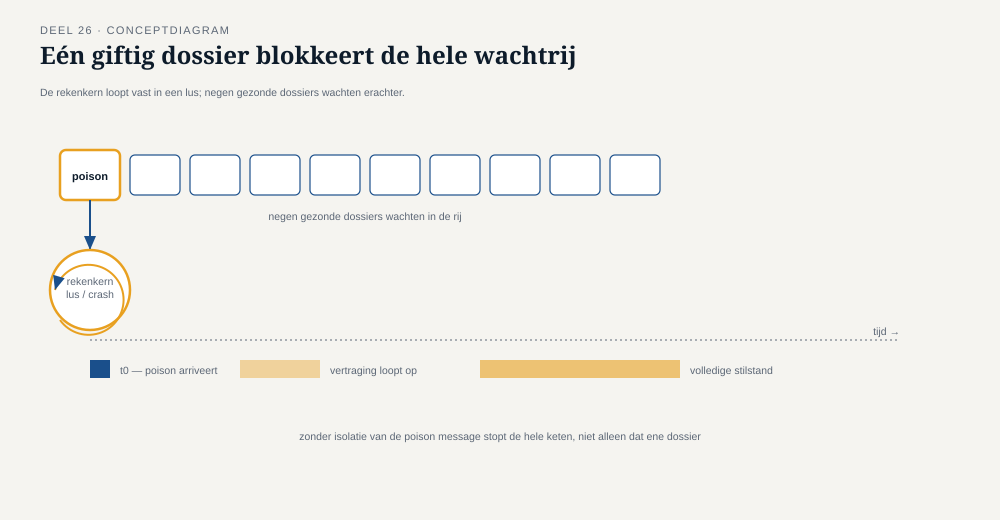

Deel 26 — Poison messages en retry-topologie op schaal
Reader · Ductus-cursus Enterprise Integration Patterns · niveau 3 (expert) · deel 26 van 30
26.0 Eén bericht dat de hele rekenkern platlegde
Tijdens een testrun van de invaarketen bleek één specifiek deelnemersdossier — met een historische, decennia oude gegevensinconsistentie die niemand ooit had opgemerkt omdat hij nooit relevant was geweest voor gewone mutaties — de rekenkern bij elke verwerkingspoging te laten vastlopen. Niet gecrasht: vastgelopen, in een oneindige berekeningslus die de rekenkern volledig in beslag nam. Omdat de retry-strategie van deel 9 automatisch een nieuwe poging deed zodra de vorige "mislukte" (technisch gezien liep de lus wel af, na een zeer lange tijd, met een generieke fout), werd dit specifieke dossier keer op keer opnieuw aangeboden — en blokkeerde daarmee, door de gedeelde rekenkerncapaciteit, ook de verwerking van alle andere, gezonde dossiers die toevallig achter dit ene dossier in de wachtrij stonden.
Dit is een poison message: een bericht dat, in tegenstelling tot het gewone onderscheid uit deel 9 (structureel ongeldig versus tijdelijk mislukt), geen van beide is — het is individueel, structureel schadelijk voor de verwerkende component zelf, ongeacht hoe vaak of hoe zorgvuldig het opnieuw wordt aangeboden. Het bericht zelf is niet per se ongeldig (het dossier bestaat, de velden zijn correct gevormd), maar de combinatie van dit specifieke bericht en deze specifieke verwerkingslogica leidt tot een uitputtend, blokkerend faalpatroon.

26.1 Waarom het onderscheid uit deel 9 hier tekortschiet
Deel 9 onderscheidde invalid message channel (structureel ongeldig, geen retry zinvol) van dead letter channel (tijdelijk mislukt, retry met backoff zinvol). Een poison message past in geen van beide categorieën netjes: het bericht is niet structureel ongeldig in de zin van deel 9 (het voldoet aan het schema, de velden zijn correct), maar het is ook niet "tijdelijk" mislukt in de zin dat een latere poging waarschijnlijker zou slagen — integendeel, elke identieke poging zal identiek mislukken, omdat de oorzaak in de combinatie van bericht en verwerkingslogica zit, niet in een tijdelijke externe omstandigheid.
Kernzin 26 van de cursus: een poison message onderscheidt zich van de twee categorieën uit deel 9 doordat retries niet alleen nutteloos zijn, maar actief schadelijk — elke herhaalde poging verbruikt capaciteit die andere, gezonde berichten nodig hebben, zonder ooit dichter bij een oplossing te komen.
De praktische consequentie: een retry-strategie die uitsluitend is afgestemd op "hoe vaak proberen we het" (deel 9) moet worden aangevuld met een mechanisme dat specifiek detecteert wanneer een bericht de verwerkende component zelf schaadt, onafhankelijk van het aantal pogingen — en dat bericht dan onmiddellijk isoleert, niet pas na het uitputten van een retry-budget dat in dit geval nooit tot een oplossing had kunnen leiden.
26.2 Retry-topologie: schaal verandert het risico
Op de schaal van niveau 1 (één koppeling) was een poison message een geïsoleerd incident. Op de schaal van niveau 3, waar de rekenkern duizenden dossiers per dag verwerkt via een gedeelde, parallel verwerkende infrastructuur (deel 16), verandert de aard van het risico: één poison message blokkeert niet alleen zichzelf, maar — zoals 26.0 liet zien — potentieel de hele wachtrij erachter, of, bij partitionering (deel 8), minstens de hele partitie waarin het toevallig terechtkwam.
Dit vraagt een expliciet ontworpen retry-topologie: niet één simpele retry-met-backoff (deel 9), maar een gelaagde structuur die voorkomt dat één schadelijk bericht de doorstroom van gezonde berichten blokkeert.
Isolatie per bericht, niet per wachtrij. Als één bericht een verwerkingspoging structureel laat vastlopen (bijvoorbeeld door een time-out te overschrijden die voor een normaal bericht ruim voldoende zou zijn), moet dat specifieke bericht apart worden behandeld — verplaatst naar een geïsoleerde "quarantainewachtrij" — zonder de hoofdwachtrij te blokkeren voor de berichten erachter. Dit vraagt technisch een mechanisme dat een individuele verwerking kan afbreken (een time-out op de verwerking zelf, niet alleen op de aflevering) en het probleembericht apart kan doorsturen, in plaats van te wachten tot de hele poging "faalt" op de gewone manier.
Een lager retry-budget voor snel-falende patronen. In lijn met de asymmetrie uit deel 9 (structurele fouten verdienen kortere retry-reeksen dan tijdelijke), maar hier verder aangescherpt: een verwerking die een duidelijk teken van een poison-patroon vertoont (bijvoorbeeld: verwerkingstijd die exponentieel oploopt in plaats van een normale, begrensde tijd), verdient een minimaal retry-budget — vaak nul aanvullende pogingen na de eerste — omdat elke extra poging bewezen schadelijk is, niet slechts kansloos.
Circuit-achtig gedrag op componentniveau, vooruitwijzend naar deel 27: als een rekenkern-instantie meerdere poison messages kort na elkaar tegenkomt, is dat zelf een signaal dat om een bredere maatregel vraagt dan het isoleren van individuele berichten — mogelijk is er een systematisch probleem (een edge case in de rekenlogica die vaker voorkomt dan gedacht) dat om onderzoek vraagt, niet alleen om isolatie van losse gevallen.
26.3 Wat Meridiaan uiteindelijk inrichtte
Na het incident van 26.0 is bij de rekenkern een expliciete verwerkingstime-out ingesteld (los van de gebruikelijke berichtaflevering-time-out uit deel 7-8): als de daadwerkelijke berekening langer duurt dan een ruim bemeten, maar begrensd maximum, wordt de verwerking actief afgebroken en het bericht direct naar een quarantainewachtrij verplaatst — met, cruciaal, een aparte, hogere prioriteit voor menselijk onderzoek dan het gewone dead letter channel (deel 9), omdat een poison message in de invaarketen per definitie een teken is van een datakwaliteitsprobleem dat de eerdere validatiestap (deel 25) blijkbaar had moeten, maar niet had, opgevangen.
Dit laatste punt is de belangrijkste les van dit deel voor de bredere keten: elke poison message die de rekenkern bereikt, is óók een signaal dat de datakwaliteitscontrole (deel 25) een gat heeft — het incident wordt dus niet alleen technisch opgelost (isolatie, quarantaine), maar ook gebruikt om de eerdere, blokkerende validatiestap te verscherpen, zodat toekomstige, vergelijkbare dossiers al ver vóór de rekenkern worden herkend.
Samenvatting van deel 26
- Een poison message is geen structureel ongeldig bericht en geen tijdelijk mislukt bericht (deel 9), maar een bericht dat de verwerkende component zelf structureel schaadt, onafhankelijk van het aantal pogingen.
- Retries op een poison message zijn niet alleen nutteloos maar actief schadelijk — ze verbruiken gedeelde capaciteit die andere, gezonde berichten nodig hebben.
- Een retry-topologie op schaal vraagt isolatie per bericht (quarantaine, niet de hele wachtrij blokkeren), een verlaagd retry-budget voor snel-falende patronen, en signalering naar bredere maatregelen bij herhaalde poison-patronen.
- Bij Meridiaan is een poison message in de invaarketen expliciet ook een signaal dat de eerdere datakwaliteitscontrole (deel 25) verscherpt moet worden.
Vooruitblik
Deel 27 bouwt hierop voort met resilience patterns die specifiek een component beschermen tegen overbelasting door zijn omgeving: circuit breaker, bulkhead, en backpressure — asynchrone varianten van patronen die de API-cursus synchroon behandelt.